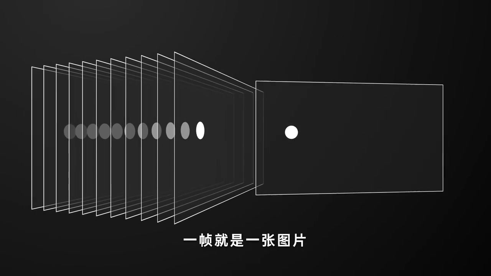
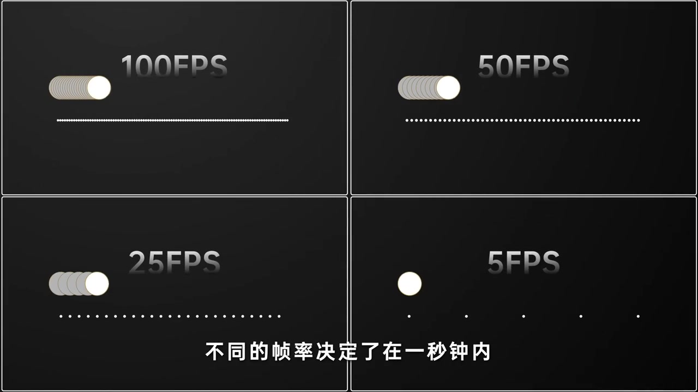
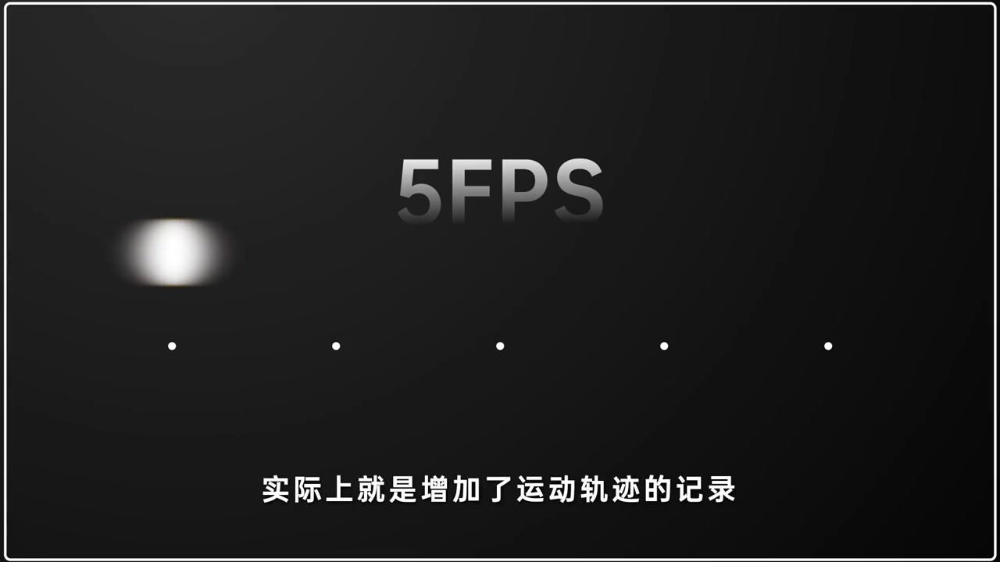
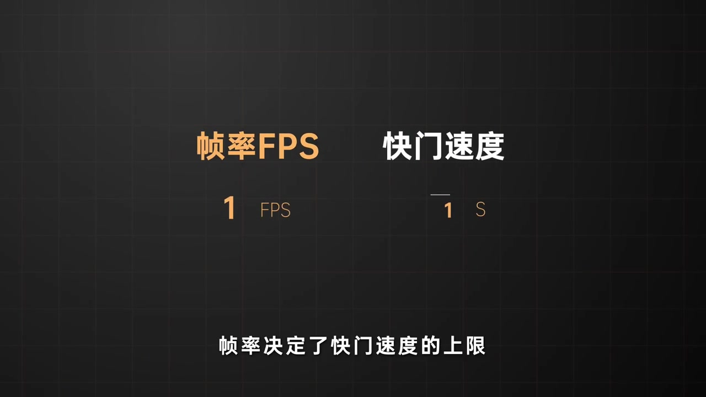
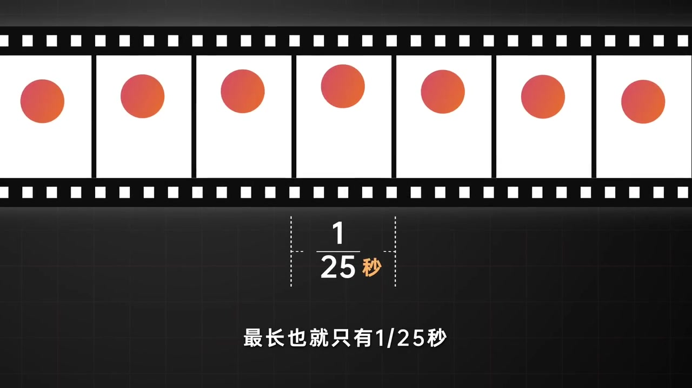
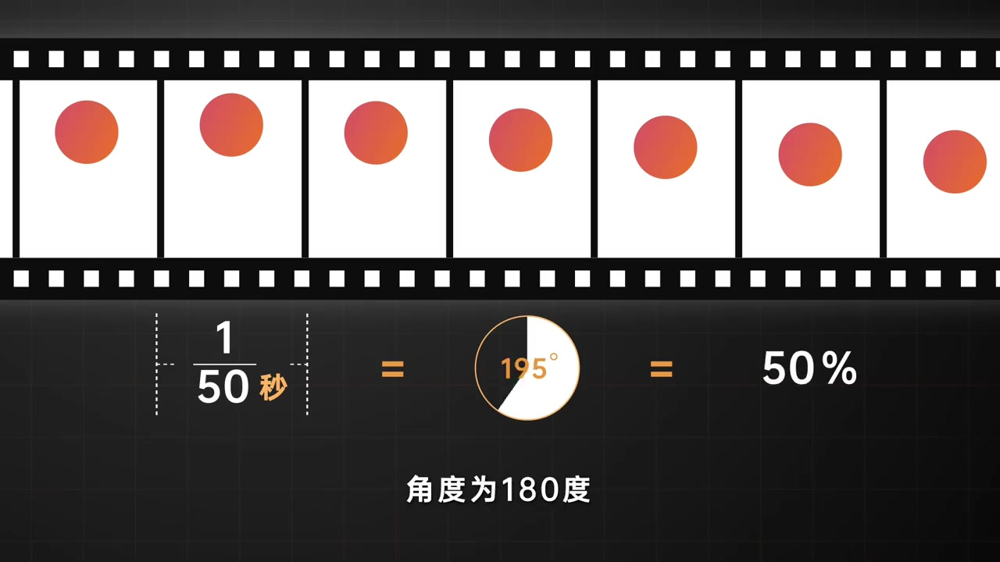
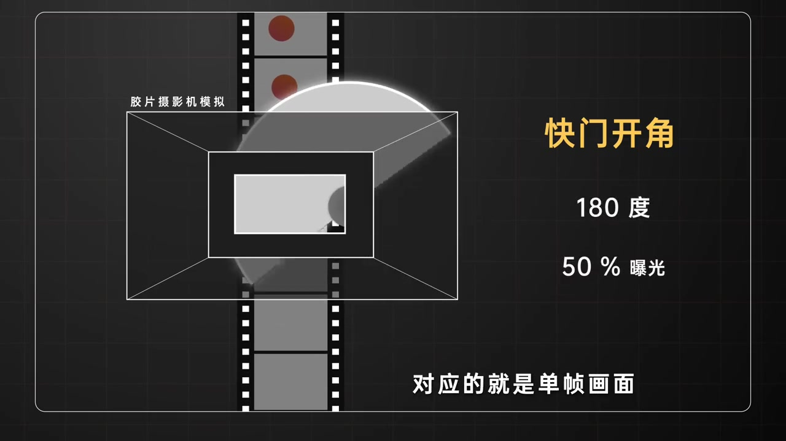
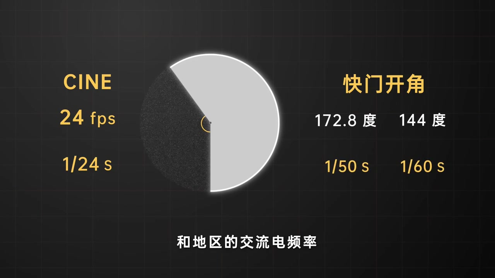

开场：视频其实是一串静止帧
深色底上，左侧叠着一串透明画框，白色小球在不同画框里位置略有偏移；右侧单独抽出一帧。旁白先把概念落稳：视频是连续播放的静止帧，一帧就是一张图片。接着用线性运动的小球作例子，后面所有帧率对比都围绕它展开。
画面字幕：「一帧就是一张图片」
说明：Whisper 常把「静止帧」识成「竞争训练 / 竞争」，「帧」识成「真」，「帧率」识成「真率」，「快门」识成「宽门」，「每帧」识成「美真 / 美帧」，「线性」识成「现行」，「一眼」识成「一言」，「平均下来」识成「凭据闹」，「倒数」识成「到处」，「光源」识成「官员」。下文叙述以可见字幕与动画画面为准；页面末尾仍完整保留全部 Whisper 分段。

四宫格：100 / 50 / 25 / 5 FPS 差在哪
画面切成四格：100FPS、50FPS、25FPS、5FPS。同一颗小球往右跑，帧率越高，采样点越密，轨迹越像连续拖尾；帧率越低，点与点之间空隙越大。旁白说：不同帧率决定了一秒钟内小球运动路径上会产生多少个画面；把这些画面放在一起连续播放，就成了视频。
画面字幕：「不同的帧率决定了在一秒钟内」

低帧率太清晰会卡，动态模糊反而更顺
旁白接着拆低帧率的观感问题：帧率较低时，物体每帧之间的运动跨度很大；此时画面过于清晰，人眼一眼就会感到明显卡顿。加入适当动态模糊，等于把运动轨迹也记进这一帧，看起来反而更连贯流畅。但模糊太大也会伤观感——除非你刻意拍成那种艺术拖影。
画面字幕：「实际上就是增加了运动轨迹的记录」

硬上限：快门再慢，也不能慢过一帧时长
标题句直接打出：帧率决定了快门速度的上限。视频拍摄里，快门速度最长也就只能是帧率的倒数。以每秒 25 帧为例，一秒钟要装下 25 帧，平均到每一帧，最长曝光也就只有 1/25 秒。胶片条上标出单帧宽度，旁白把这个「最长也就只有 1/25 秒」钉死。
画面字幕：「帧率决定了快门速度的上限」


用圆盘角度谈曝光：360° 全开，180° 一半
旁白把时间换成圆形分布：打开 360° 等于 100% 曝光，也是单帧曝光上限（25fps 时就是 1/25 秒）。时间减半，曝光量变成 50%，也就是 1/50 秒，角度为 180°。每帧只曝光一半时长所产生的动态模糊，是一个比较符合人眼视觉感知的数值——这也是影视里常说的「180° 快门角」经验法则。
画面字幕：「角度为180度」

胶片摄影机：金属圆盘转速匹配帧率
这种以角度控制曝光的快门，早期用在胶片摄影机里：一块金属圆盘，转速匹配帧率，靠改变打开角度让光线穿过，从而改变每帧胶片的曝光时长。快门角度大小决定每帧画面曝光多少；通常说的 180°，对应单帧一半的曝光时长，也就是帧率倒数的一半。如今一些电影机仍沿用快门角度标注。
画面字幕：「快门开角 180 度 · 50% 曝光」

看到 172.8°、144° 不用惊讶
旁白提醒：如果你看到 172.8°、144° 这类奇怪数值，不必惊讶。这通常是电影 24 帧拍摄帧率下的开角选择。172.8° 开角对应每帧曝光总量是 1/24 秒的 48%，换算过来约 1/50 秒快门；144° 对应 1/24 秒的 40%，约 1/60 秒快门。用它们，是为了匹配不同国家和地区的交流电频率。
画面字幕：「这通常是采用了电影24帧的拍摄帧率」
频闪：快门与人造光源交流电不同步
蓝色正弦波铺满画面，标题落在「交流电频」。旁白点出要避开的大问题——频闪：通常因为快门速度设定与人造光源的交流电频率不匹配。我们国家是 50Hz；若拍 24fps 并按 180° 曝光，快门约 1/48 秒，每帧记录的电压周期不一致，亮度会跳，连续播放就可能闪烁。改用 1/50 秒快门，才能与周期匹配、亮度一致，从而避开频闪。
画面字幕：「与人造光源的交流电频率不匹配而导致的」

收束很干脆：在视频里，帧率既决定采样密度与动态模糊需求，也封死了快门上限；180° 是观感默认值，而为了电灯不闪，有时要故意把开角拧到 172.8° 或 144°。